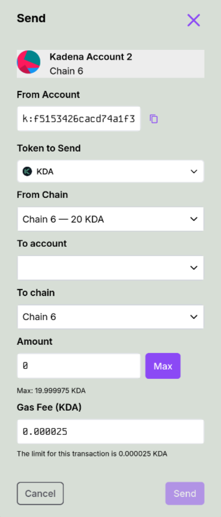

Introduction
MetaMask is a popular Ethereum wallet and browser extension that developers can integrate into a variety of third-party applications. MetaMask Snaps is an open-source solution to enhance MetaMask’s functionalities beyond its native capabilities.
The Kadena Wallet Snap, initially developed by the Kadena Community and now maintained by Mindsend Datatech, enables users to interact directly with the Kadena blockchain without relying on traditional JSON-RPC endpoints, offering Kadena-native functionalities like sending KDA, performing cross-chain transfers, and retrieving account information.
What is a Snap?
MetaMask Snaps is an open-source framework allowing secure extensions to MetaMask, enhancing Web3 user experiences. It empowers the addition of new API methods, supports various blockchain protocols, and tweaks existing functionalities via the Snaps JSON-RPC API.
Snaps enable users to interact with new blockchains, protocols, and decentralized applications (dApps) beyond what is natively supported by MetaMask. The goal of the MetaMask Snaps system is to create a more open, customizable, and extensible wallet experience for users while fostering innovation and collaboration within the blockchain and decentralized application ecosystem.
üìö Learn more:
Getting Started with Kadena Snap
The Kadena Snap is a MetaMask extension that brings Kadena-native capabilities—like account creation, transaction signing, and cross-chain transfers—directly into your MetaMask wallet.
This guide walks you through installing the Snap and using it via dApps that support it.
Installation
Before you can use the Kadena Snap, you must have MetaMask installed and configured in your browser.
- Visit the official MetaMask Snap Directory and locate Kadena Snap.
- Click Install to grant permissions and enable the Snap.
- The Snap will now be available inside your MetaMask under the “Snaps” section.
üí° When installed, the Snap runs isolated from other extensions, using MetaMask‚Äôs permissioned execution model for enhanced security.
Using the Snap
Once installed, the Kadena Snap can be accessed via supported decentralized applications (dApps). You don’t interact with it directly through MetaMask—it activates automatically when the connected site uses Snap methods.
üöß A dedicated web interface for interacting with the Snap is under development and will be available at a future domain.
Here’s what you can do with the Snap-enabled dApp:
-
Create a Kadena Account:
Click “+ Add Account” to generate a new Kadena account managed by the Snap. -
Send and Receive $KDA:
Use the dApp’s interface to send and receive KDA tokens across any of Kadena’s 20 chains. -
Sign Transactions Securely:
When a dApp sends a transaction request, MetaMask will trigger a secure popup for approval. -
Perform Cross-Chain Transfers:
The Snap abstracts the complexity of transferring KDA between Kadena’s braided chains. -
Buy $KDA:
Integrated onramp support (e.g., Simplex) allows you to purchase KDA within the dApp. -
Use Gas Stations:
Fee abstraction via Kadena’s gas stations ensures transactions can be executed without the sender owning KDA initially. -
Ledger Support:
The Snap can store Ledger-based Kadena accounts (signing must be handled manually by the dApp). -
View Balances & Activity:
The dApp can show balances and recent transactions using Snap-stored accounts.
Learn More
- Kadena Snap NPM Package: https://www.npmjs.com/package/@kadena/snap
- Kadena Snap Audit Report: View PDF
- MetaMask Snap Docs: docs.metamask.io/guide/snaps.html
Snap Architecture
What does snaK look like under the hood?

One of the primary benefits of developing and using a Snap like snaK in your application is that it inherits the security model of MetaMask. Each Snap runs in its own isolated execution environment, completely sandboxed from other Snaps and browser extensions.
In the case of snaK, this isolation is crucial because the Snap manages private keys for Kadena accounts derived from the user's MetaMask seed phrase or imported independently. The Snap exposes a minimal set of RPC APIs, such as:
create-accountshow-accounttransfer
These functions allow secure interaction with the Chainweb network while keeping private key material inaccessible to the application.
Secure Storage and Execution
Within snaK, key data such as:
Private KeyPublic KeyAccount IDChain ID
are stored in internal Snap state. Only the Snap has access to this information. The RPC API handler gates all external access and enforces capability-based restrictions.
The Snap is also responsible for managing the current account context, ensuring actions are executed against the correct wallet index and chain ID.
Why it Matters
This architecture ensures that:
- No external dApp or Snap can access your private keys.
- All transactions must be explicitly signed via the Snap interface.
- The Snap can support multiple chain IDs in Kadena’s multi-chain architecture.
- Users retain full control over account selection and transaction authorization.
By leveraging MetaMask's Snap framework, snaK ensures high-security interaction with the Kadena blockchain, giving developers and users a reliable tool for integrating Web3 functionality with native wallet capabilities.
Frequently Asked Questions (FAQ)
How do I install the Kadena Snap?
For developers integrating the Snap:
Ensure MetaMask is installed in your browser. The Kadena Snap can be installed via a supported dApp or manually through the MetaMask Snaps Directory.
Note that Snaps have minimal UI. To unlock the full functionality, dApps must integrate directly with the Snap's RPC API. You can view our demo app for reference and SDK usage.
For users:
You can install the Snap through the MetaMask Snaps Directory. After installation, access it through: MetaMask → Settings → Snaps → Kadena Snap
What are MetaMask Snaps?
MetaMask Snaps are secure, sandboxed extensions that add new features to MetaMask, including support for new blockchains, transaction logic, and account models — all without requiring changes to MetaMask's core codebase.
What is a Snap?
A Snap is an isolated JavaScript module that interacts with MetaMask through a restricted permissioned API. Snaps can add support for new protocols (like Kadena), handle signing flows, show custom notifications, or introduce new account models.
Are Snaps safe to use?
Yes. Snaps are sandboxed and can only access what users explicitly approve. They cannot access your MetaMask private keys or seed phrase. Every Snap declares its required permissions during installation, and MetaMask handles consent.
Can I interact with Kadena Snap directly in MetaMask?
Not directly. The Snap is designed to be accessed through a dApp using the exposed Snap RPC methods. These methods enable account creation, balance queries, and transaction signing.
We provide a reference frontend and SDK to help dApps integrate the Snap.
Why is my Kadena Snap address different from my MetaMask address?
Kadena Snap generates a new Kadena key pair using entropy provided by MetaMask, not by accessing the seed phrase directly. This ensures your Snap account is securely tied to your MetaMask account, but operates independently from Ethereum addresses.
This Snap-generated account is stored securely in isolated state and used for signing Kadena transactions.
Can I import an existing Kadena account?
Not yet. For now, Kadena Snap only supports generating new Kadena accounts using MetaMask-provided entropy. Importing external private keys is not currently supported, but may be added in a future release.
What happens if I uninstall the Snap?
If you uninstall the Snap and later reinstall it while using the same MetaMask seed phrase, the same Kadena Snap account(s) will be restored automatically.
Your account derivation is based on MetaMask entropy, so the Snap can recover accounts deterministically without storing them externally.
Can I export the private key of my Snap account?
Not yet. For security reasons, Kadena Snap does not currently support exporting private keys. This may be supported in the future with proper UI/UX and user confirmation flows via MetaMask.
Is Kadena Snap available on MetaMask Mobile?
Not yet. MetaMask Mobile does not currently support Snaps. The Kadena Snap is available only in desktop browser extensions (Chrome, Firefox, Brave). MetaMask has announced upcoming support for Snaps on mobile.
Kadena Snap User Guide
This guide walks you through the steps to connect your MetaMask wallet to the Kadena Snap, install it, approve permissions, and perform basic operations like switching networks and sending $KDA.
What is the Kadena Snap?
The Kadena Snap is a custom MetaMask Snap that allows users to interact directly with the Kadena blockchain. It enables you to:
- Manage Kadena accounts securely inside MetaMask
- Perform cross-chain transfers across Kadena's 20 chains
- Sign and send transactions using $KDA
- View account balances and activity
- Use gas stations to simplify fees
- Buy KDA through integrated fiat onramps
The Snap is fully isolated, permissions-based, and built using MetaMask’s secure extensibility model.
Who is this guide for?
This guide is intended for:
- Users who want to manage $KDA from within MetaMask
- Developers building dApps that integrate with the Kadena Snap
- Testers exploring Snap capabilities on testnet
No prior knowledge of Kadena or Snaps is required, though basic familiarity with MetaMask is helpful.
What you'll need
Before getting started, make sure you have:
- ✅ MetaMask installed in your browser
- ✅ Access to a Snap-compatible dApp (or localhost test setup)
- ✅ Some $KDA (use the faucet if testing)
- ✅ Basic understanding of MetaMask permissions
üí° You can install the Snap even without a dApp using the MetaMask Snap Directory.
What this guide covers
This guide includes:
- Connecting your MetaMask wallet
- Installing and approving the Kadena Snap
- Using the Snap to send transactions
- Switching to the testnet (optional)
- Funding accounts via faucet
- Using advanced Snap features like cross-chain transfers
You’re now ready to explore the Kadena Snap and unlock full-chain functionality from right inside MetaMask.
Connect to Kadena Snap
When visiting a dApp that uses Kadena Snap, you’ll be prompted to connect your MetaMask wallet.

Your Kadena account will be derived from your MetaMask Secret Recovery Phrase.
Approve the Connection Request
MetaMask will display a connection request, asking you to approve the origin (e.g., http://localhost:8080).

Click "Conectar" (or "Connect") to proceed.
Approve Permissions to Add Snap
You’ll now be asked to install the Kadena Snap, which includes requesting permissions:
- Manage Kadena accounts
- Display dialog windows in MetaMask
- Display a custom screen

Click "Confirmar" to continue.
Confirm Final Permissions
MetaMask may show a final prompt to "Proceed with caution", requesting permission to manage your Kadena accounts.

Check the box to Install Kadena and click Confirmar to proceed.
Snap Installed Successfully
Once installed, MetaMask will display confirmation that the Kadena Snap is ready to use.

Click OK to return to the dApp.
Switchinng Networks (Optional)
If the dApp requires you to use the Kadena Testnet, you’ll be prompted to approve the network switch.

Click Aprovar (Approve) to allow switching to the testnet.
Fund Your Account (Using Faucet)
To perform any transaction, your new account needs $KDA. Use the official faucet:
üîó Kadena Faucet
Once funded, you’ll see a screen like this while a transaction is being processed:

Sending KDA
After funding your account, you can send $KDA to other accounts or perform cross-chain transfers using the Snap interface.

- From Account: Your Kadena address
- To account: Recipient address
- To chain: Select destination chain (e.g., Chain 1–20)
- Amount: Amount of $KDA
- Gas Fee: Usually prefilled
Click Send to broadcast your transaction.
SDK Quickstart
This guide walks you through setting up a Kadena Snap-compatible dApp using the official SDK tools. You'll use the create-kadena-app CLI to scaffold a Next.js project and connect it to the Kadena Snap via the wallet adapter.
What is this SDK for?
The Kadena Snap SDK provides tools to simplify integration of Kadena’s Snap into modern frontend applications using frameworks like Next.js. It includes:
- CLI scaffolding tools (
create-kadena-app) - MetaMask Snap-compatible wallet adapters
- Example dApp templates with Snap support
This setup allows developers to build secure, cross-chain Kadena applications that interact directly with MetaMask using the Snap extension.
Who is this guide for?
This guide is for developers who want to:
- Scaffold a working Next.js dApp integrated with Kadena Snap
- Enable MetaMask Snap-based wallet connections
- Build on Kadena using TypeScript and modern tooling
What you'll need
Before starting, make sure you have:
- ✅ Node.js and a package manager (
npm,yarn, orpnpm) - ✅ MetaMask installed in your browser
- ✅ Kadena Snap installed (see User Guide)
- ✅ Basic familiarity with TypeScript and React
Generate a New Project
We leverage the create-kadena-app CLI tool to scaffold a Next.js project.
npx @kadena/create-kadena-app generate-project -t nextjs -n my-kadena-dapp
cd my-kadena-dapp
Install Dependencies
Use your preferred package manager to install dependencies:
pnpm install
# or
npm install
# or
yarn install
Integrate Snap Wallet Adapter
To enable Snap wallet support, edit the file pages/_app.tsx:
import { snapAdapter } from '@kadena/wallet-adapter-snap';
import { AdapterFactory } from '@kadena/wallet-adapter-base';
const adapters: AdapterFactory[] = [
snapAdapter(), // Add any other adapters here if needed
];
Run the Development Server
Start your local development server:
pnpm dev
# or
npm run dev
# or
yarn dev
Your app should now be running at http://localhost:3000, ready to connect to MetaMask and use the Kadena Snap.
6. Fund with Faucet (Optional)
To perform transactions, fund your test account with KDA using the official testnet faucet:
Paste your k: address and submit the request to receive free KDA.
Resources
You're now ready to build full-stack Kadena applications with native MetaMask Snap support.